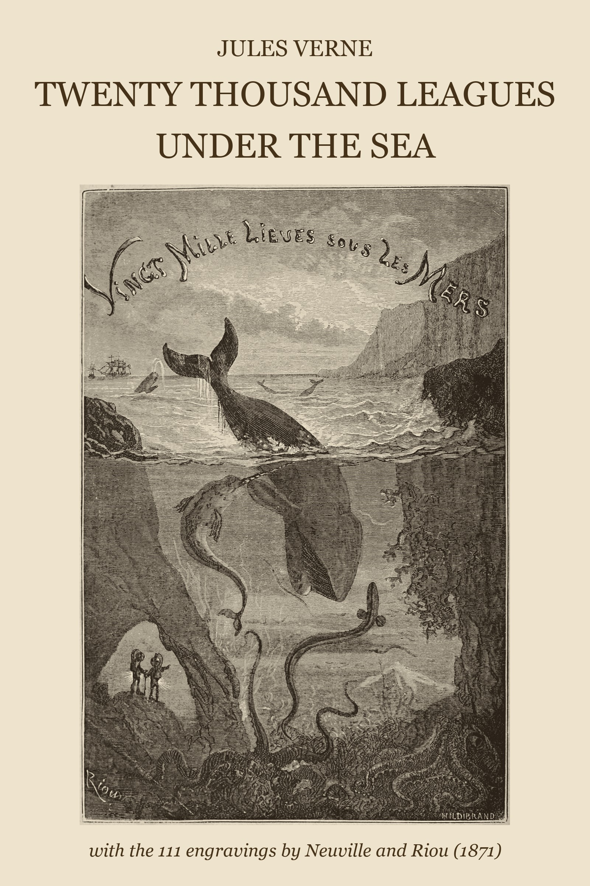

Step inside Captain Nemo’s Nautilus in 3D, built from the figures Verne gives in the novel, and turn Nemo’s own calculations into forces you can see. The full novel is here too, in a new English translation from the 1871 Hetzel edition, with all 111 engravings by Alphonse de Neuville and Édouard Riou.
The Nautilus and the physics behind it.
A model of Captain Nemo’s submarine built from the measurements in Verne’s text. Rotate it, zoom in, open the compartments, and see the 1871 engraving for each one. Pilot it with the engine, the rudder, the diving planes, and the ballast tanks. Works best on a computer.
In the Physics panel, the figures Nemo gives Aronnax in Part I, chapter XIII, become arrows drawn on the hull: weight, buoyancy, pressure, the force on the planes, thrust, and drag. Seven cards, from Archimedes to engine power, each with a scene to set up and questions for the class. The printable handout has room for answers and an answer key for the teacher.
In English, and in Portuguese.
The complete novel, both parts and 47 chapters, translated from the French of the 1871 Hetzel edition, unabridged, with every engraving where it appears in the original. Free to read and share under the MIT License.
In Portuguese: read online, EPUB, PDF, and a nine-minute narrated video over the 1871 engravings.
How this work was made.